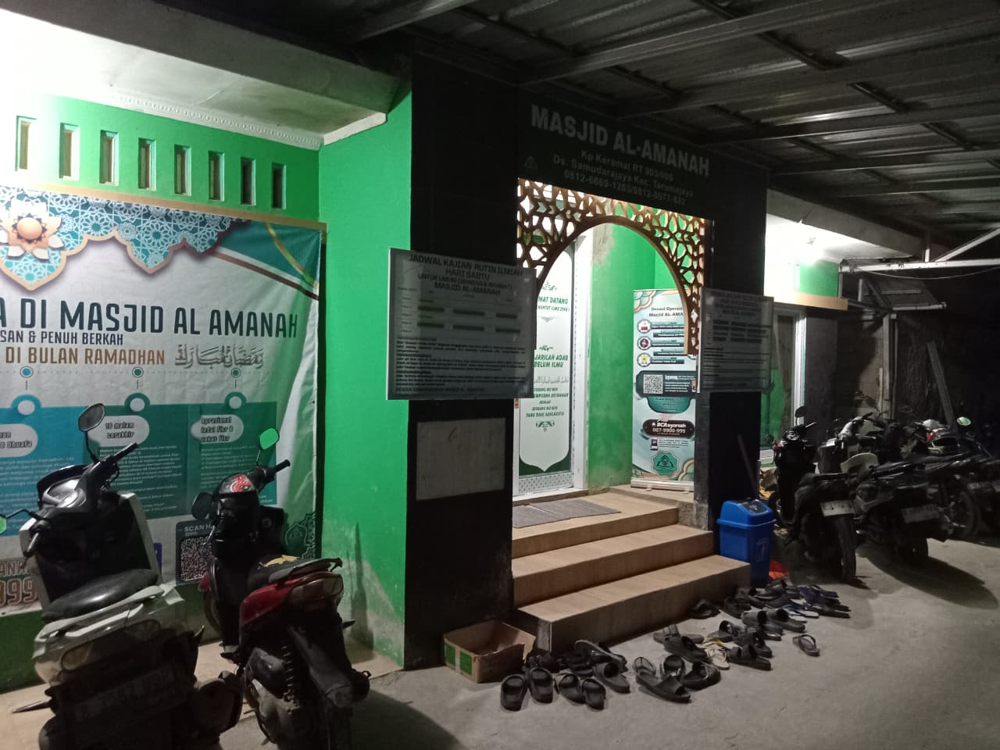
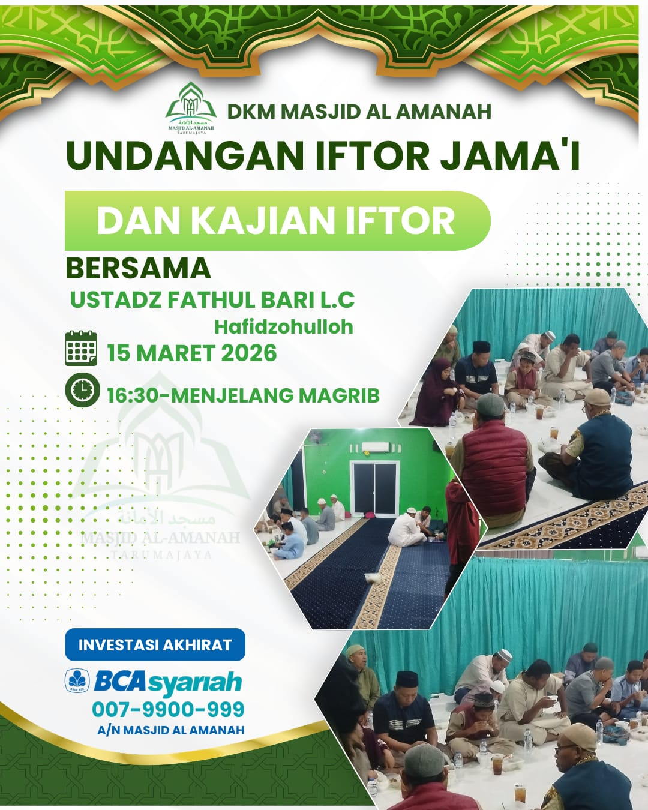
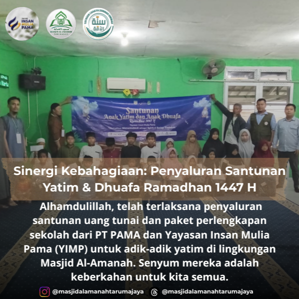
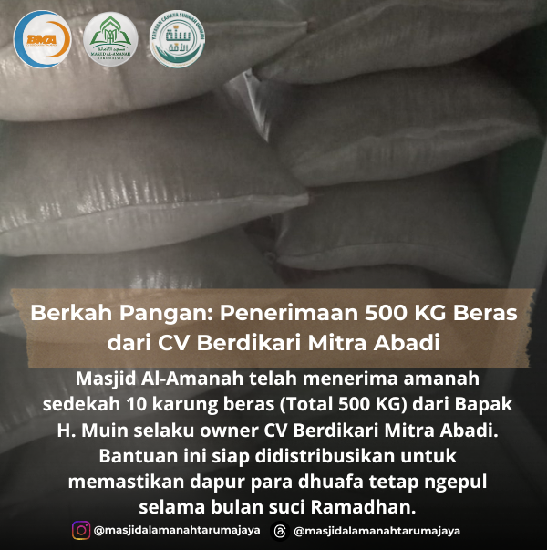
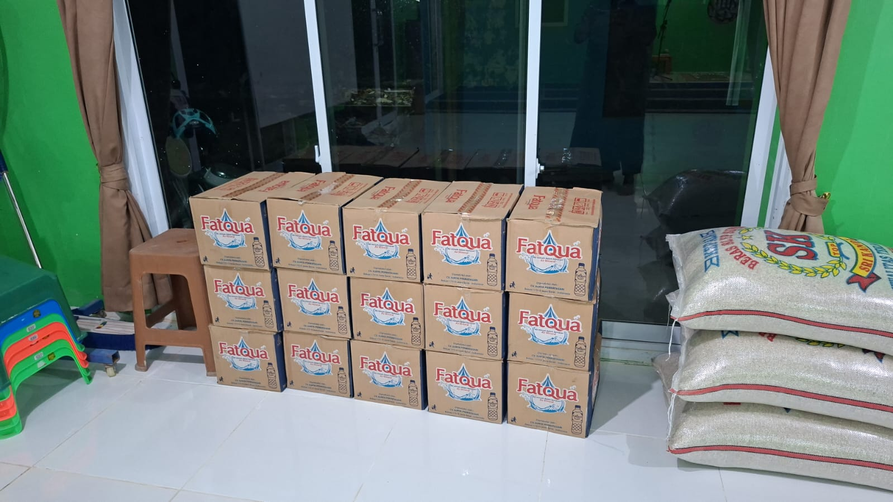
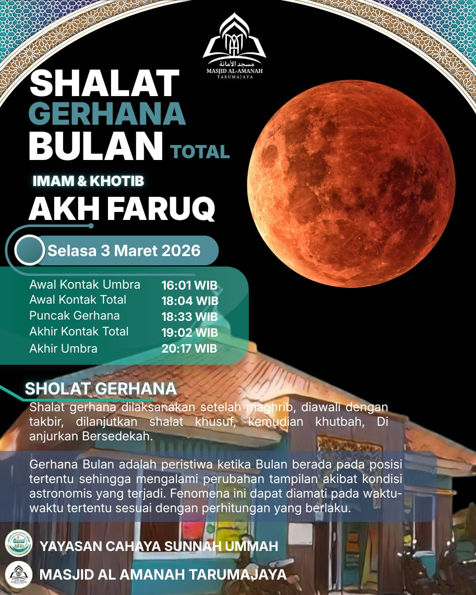

MASJID AL-AMANAH
TARUMA JAYA
TARUMA JAYA
V2QH+MGX, Kp keramat, RT.003 RW006,
Samudra Jaya, Kec. Tarumajaya, Bekasi Utara, Jawa Barat

Masjid Al Amanah yang berdiri di kawasan Tarumajaya, Bekasi, menjadi bukti nyata bahwa rumah Allah tidak hanya berfungsi sebagai tempat ibadah, melainkan juga sebagai pusat pencerahan masyarakat. Dengan arsitektur sederhana namun penuh makna, masjid ini menawarkan suasana teduh yang membuat jemaah betah berlama-lama berdzikir dan membaca Al-Qur’an. Tak heran jika setiap shalat lima waktu selalu dipadati warga sekitar, bahkan menjadi magnet bagi para musafir yang kebetulan lewat. Masjid Al Amanah As Sunnah membuktikan bahwa keberadaan masjid di Indonesia tetap menjadi jantung kehidupan umat.
Acara dan kegiatan terbaru di Masjid Al-Amanah Taruma Jaya.

“Siapa memberi makan orang yang berpuasa, maka baginya pahala seperti orang yang berpuasa tersebut.” (HR. Tirmidzi no. 807)

Alhamdulillah, telah terlaksana penyaluran santunan paket sembako dan santunan tunai hasil sinergi Masjid Al-Amanah bersama PT PAMA dan Yayasan Insan Mulia Pama (YIMP) untuk masyarakat sekitar Tarumajaya.

Masjid Al-Amanah telah menerima amanah sedekah 10 karung beras (Total 500 KG) dari Bapak H. Muin, owner CV Berdikari Mitra Abadi. Beras ini dialokasikan untuk mendukung kebutuhan pangan dhuafa selama bulan Ramadhan.
Update berita terkini, laporan kegiatan, dan informasi penting seputar Masjid Al Amanah.
Tunaikan Zakat Fitrah Anda dengan mudah melalui transfer atau langsung ke Sekretariat Masjid Al-Amanah.
Lihat Detail
Alhamdulillah, kiriman stok air minum botol Fatqua telah diterima dan tersedia di gudang logistik dalam kondisi baik. Jazakumullahu khairan katsiran kepada para muhsinin atas sedekah air minum ini. Semoga Allah membalasnya dengan pahala yang berlipat ganda. Aamiin.
Selengkapnya
Masjid Al-Amanah menyelenggarakan Shalat Gerhana Bulan Total (Khusuf) malam ini. Mari laksanakan sunnah Rasulullah ﷺ saat fenomena alam ini berlangsung.
SelengkapnyaIbadah nyaman dengan AC dan karpet bersih.
Pelaksanaan shalat lima waktu tepat waktu sesuai tuntunan Sunnah Nabi.
Tholabul 'ilmi rutin bersama asatidzah di atas pemahaman Salafus Sholeh.
Pengelolaan Zakat, Infaq, Shadaqah & Wakaf.
BCA Syariah: 007-9900-999
A.n Masjid Al-Amanah
Tersedia air minum gratis khusus untuk jamaah & peserta kajian.
V2QH+MGX, Kp keramat, RT.003 RW006,
Samudra Jaya, Kec. Tarumajaya, Bekasi Utara, Jawa Barat
Media Sosial
Ikuti informasi kegiatan masjid setiap hari